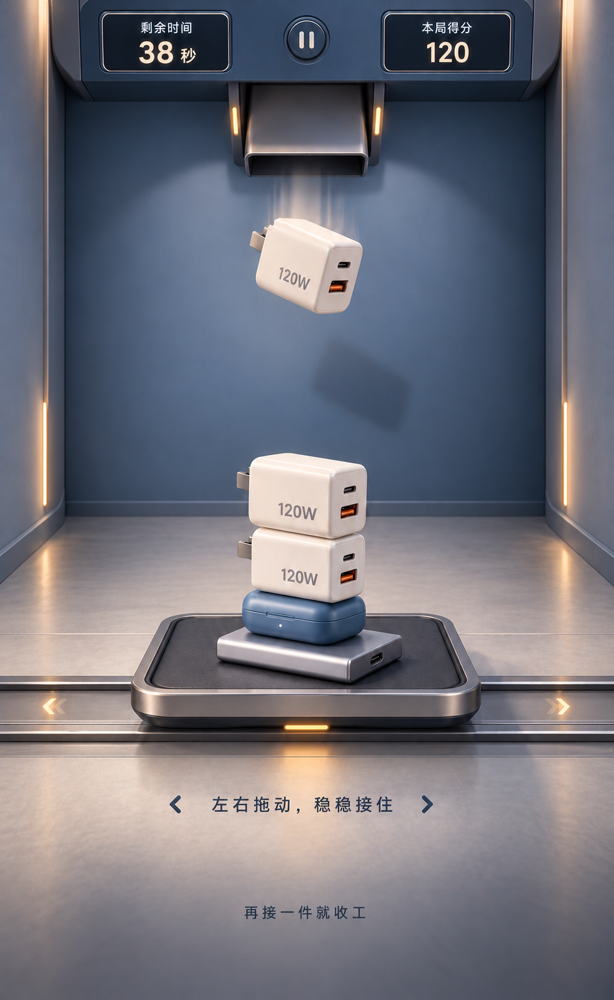

<!doctype html><html lang="zh-CN"><meta charset="utf-8"><title>参考与静态成品对照</title><style>*{box-sizing:border-box}body{margin:0;background:#111a27;color:#dce5ee;font:13px system-ui}header{text-align:center;padding:10px}section{display:flex;gap:14px;justify-content:center}figure{margin:0;width:390px}figcaption{text-align:center;padding:8px}img,iframe{width:390px;height:635px;display:block;border:0}img{object-fit:fill}</style><header>静态对齐检查 · 左：已确认精修图　右：实际WebGL渲染（非生成图）</header><section><figure><figcaption>已确认参考</figcaption></figure><figure><figcaption>浏览器实际渲染 · 静态版</figcaption><iframe src="index.html" title="实际WebGL静态场景"></iframe></figure></section></html>
